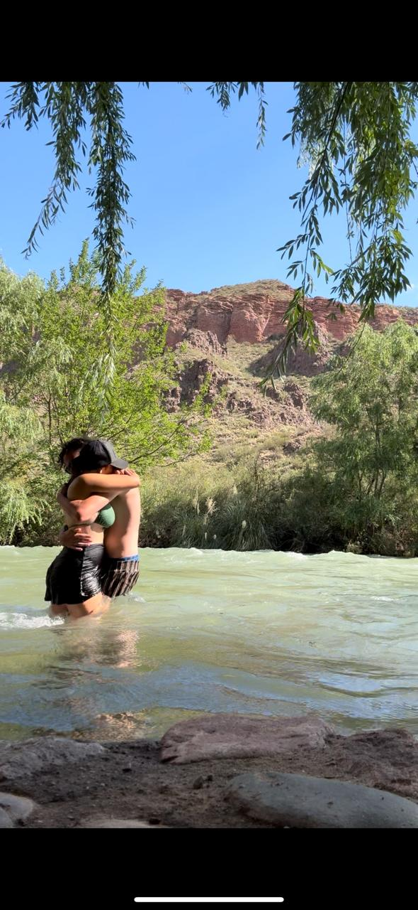

Montañas y bodegas en Mendoza
Relato de nuestro viaje a Mendoza: San Rafael, la capital y Potrerillos Este viaje a Mendoza fue una mezcla perfecta de aventura, paisajes imponentes y buen vino. Decidimos empezar en San Rafael, una ciudad tranquila al sur de la provincia, ideal para relajarse y conectar con la naturaleza. Apenas llegamos, nos sorprendió la calma de sus calles y la amabilidad de la gente. Alquilamos unas bicis y nos largamos a recorrer los alrededores: viñedos infinitos, bodegas familiares y caminos de álamos junto a acequias. Uno de los días más lindos fue la excursión al Cañón del Atuel: subimos a un micro tempranito y pasamos el día entre montañas, lagos turquesas y formaciones rocosas espectaculares. Hicimos kayak en el río, probamos dulces regionales y sacamos mil fotos. Las noches en San Rafael eran de cenas largas, charlas y brindis con vino mendocino. Después de unos días, partimos rumbo a Mendoza capital. Cambió el ritmo: la ciudad es más grande, llena de vida y con una movida cultural impresionante. Caminamos por la Peatonal Sarmiento, nos sentamos en plazas con sombra y probamos helado de malbec (¡sí, existe!). Visitamos el Parque General San Martín y, por supuesto, no faltó un tour por bodegas, aprendiendo de vinos y catando varietales en paisajes de montaña. Uno de los días más esperados fue la escapada a Potrerillos. Nos subimos a un colectivo y en menos de una hora estábamos en plena montaña. El lago Potrerillos, con su agua azul y las montañas nevadas de fondo, parecía de postal. Caminamos por senderos junto al lago, disfrutamos el aire puro y terminamos la tarde tomando mate mirando el atardecer. Mendoza nos regaló paisajes increíbles, tranquilidad y mucho sabor. Volvimos a casa con la mochila llena de botellas de vino, alfajores y recuerdos felices. Definitivamente, un destino al que queremos volver.